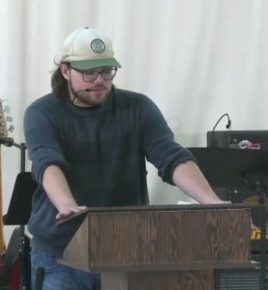

Lucas Van Troost is an aspiring explorer and musician. When not teaching about the carolinian forest region and its surrounding wetlands you can find him playing guitar on the beach, Lucas is currently taking Adventures, Expeditions and Interpretive Leadership at Fanshawe College. Prior to post-secondary Lucas took the Environmental Leadership Program at East Elgin Secondary School in Aylmer, Ontario, Canada. Hailing from Vienna, Ontario, Lucas spends time camping, fishing and writing music with his guitar. After College he is seeking a career in environmental expedition.